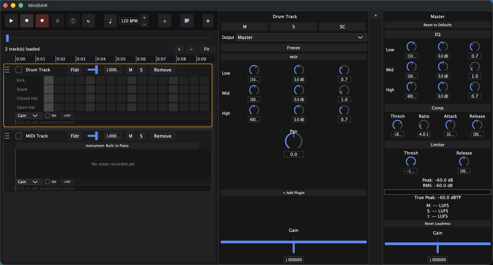
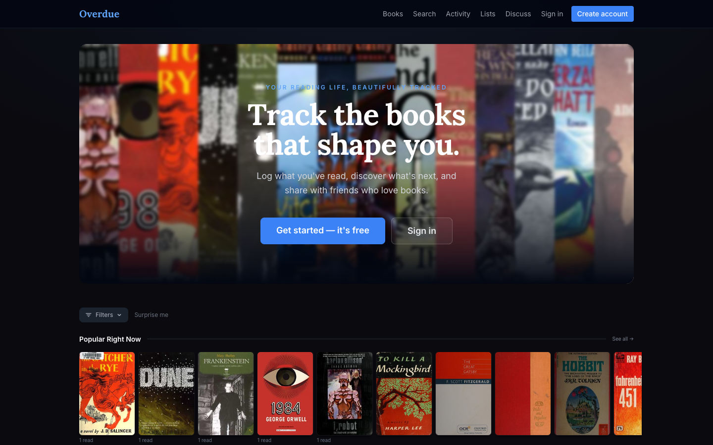
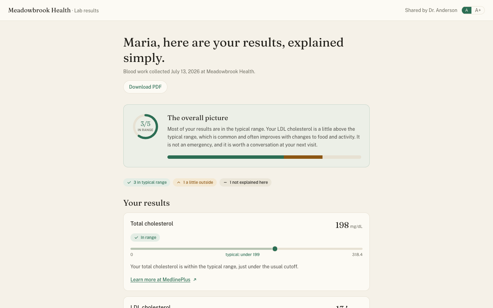
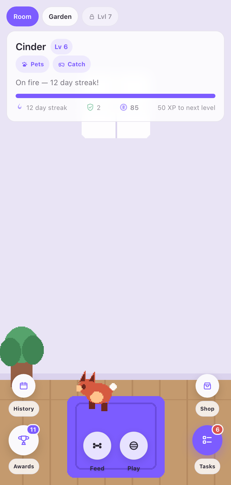
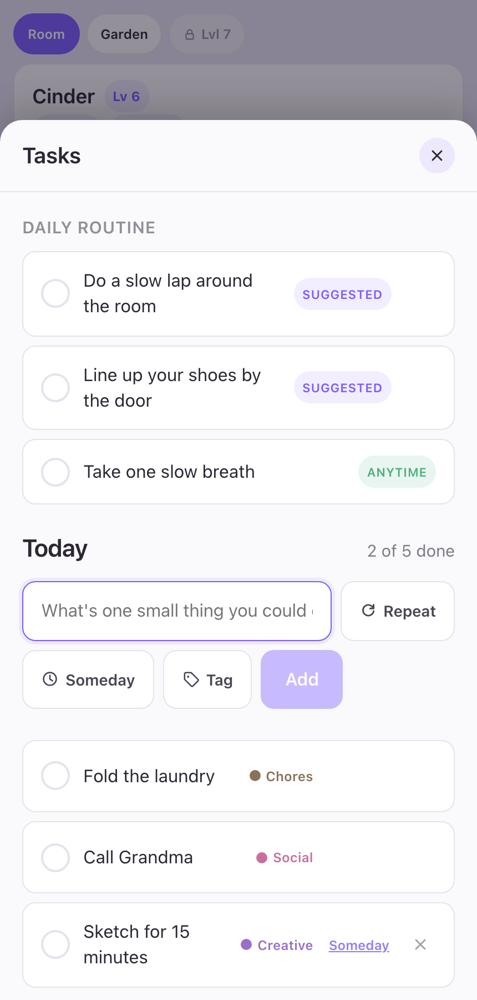
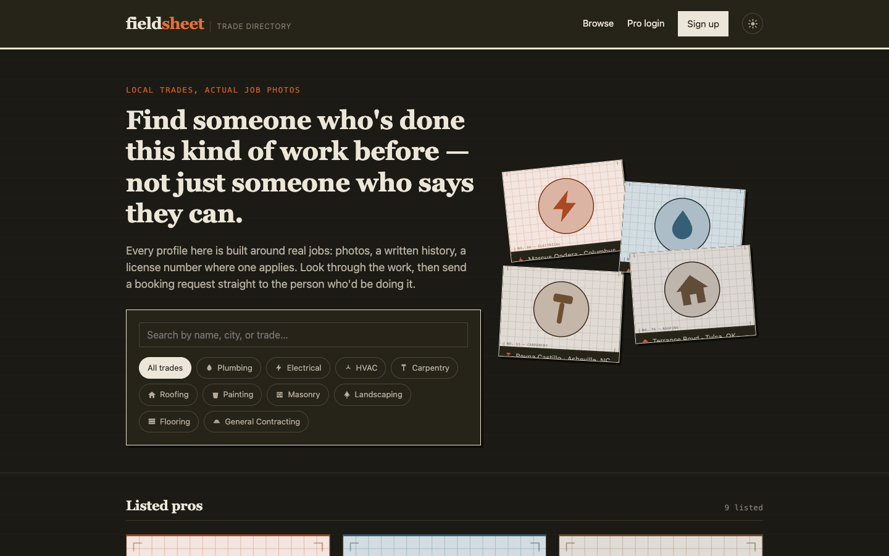
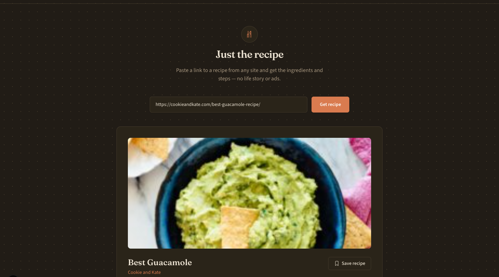

Software Developer
I build small, focused apps end to end.
From a full desktop DAW with VST hosting to a gamified task tracker, I like taking a project from idea to something that actually runs. Below is a selection of what I've been working on.
About
I'm a developer who likes shipping complete, working software rather than stopping at prototypes. My projects range from a native audio workstation with out-of-process plugin hosting to full-stack web apps that are live today, and a phone-first app designed around people who find productivity tools stressful.
Across all of them I care about the details that make software feel finished: handling failure gracefully, protecting user data, writing tests for the parts that must be right, and designing with the person using it in mind instead of adding complexity the project doesn't need.
Full-stack web
- TypeScript
- React
- Next.js
- Vite
- Tailwind CSS
- Node.js
- Express
- REST APIs
Data & auth
- SQLite
- Postgres / Supabase
- JWT & sessions
- bcrypt
- File uploads
- Email (SMTP)
Systems & audio
- C++
- JUCE
- Real-time DSP
- Multi-process architecture
- VST3 / AU hosting
- CMake
AI integration
- Claude API
- Vercel AI SDK
- Schema-validated output (Zod)
- Grounded generation
- Human-in-the-loop design
Mobile & product
- Capacitor (iOS / Android)
- PWA
- Local notifications
- Gamification
- Accessibility-minded UX
Quality & shipping
- Vitest
- Playwright
- JUCE unit tests
- SSRF-safe fetching
- Railway deployment
- Git
Projects
A mix of desktop, web, and mobile apps.
MiniDAW
A digital audio workstation written from scratch in C++ and JUCE. It records, sequences, mixes and masters audio, MIDI and drum tracks, and hosts third-party VST3/AU plugins in a separate process so a crashing plugin can't take the project down with it.
- Multi-track audio, MIDI and drum-machine tracks with multi-clip timelines, comping, trim, fades and split
- Piano roll with velocity, pitch-bend and CC lanes, plus a step-grid drum sequencer and a sampled-piano instrument
- Per-track EQ, send/return buses, sidechain compression, and a master EQ, compressor and limiter with peak, RMS, true-peak and LUFS metering
- Breakpoint automation for gain, pan, EQ and hosted plugin parameters, with MIDI-learn for hardware controllers
- Out-of-process plugin hosting with crash recovery, plus tempo-following time-stretch, audio-to-MIDI and scale-snap pitch correction
- Stem and mixdown export (WAV, AIFF, FLAC, Ogg, MP3), project save/load with undo/redo, and a JUCE unit-test suite

Overdue
A Letterboxd-style social reading tracker. Readers log and review books, keep a dated reading diary, a to-read shelf and live progress, and build lists to share, over a catalog of 557 books with real covers from Open Library.
- Reviews and ratings that other readers can like and comment on
- To-read, currently-reading and finished shelves, a reading diary, per-user stats and reading challenges
- Custom lists, follows, an activity feed and a threaded discussion board
- Browse, search, author pages, similar-book recommendations and a "Surprise me" pick
- JWT auth with bcrypt; React, Vite, Tailwind and an Express + SQLite API in TypeScript

Lab Result Explainer
Turns a lab report PDF into a plain-language page a patient can actually read. AI does the transcribing and drafting, but two human gates sit in front of everything a patient sees, and it never diagnoses or gives treatment advice. Runs on synthetic data only.
- A provider uploads a PDF, Claude extracts the values, and the provider verifies them before any are used
- Deterministic code, not AI, classifies every result against the report's own printed ranges, backed by golden test fixtures
- The explanation is grounded in MedlinePlus content and must be approved by the provider before it is sent
- Critical results are held for a human call instead of being explained
- Patient page is a date-of-birth-gated link with range markers, text-size toggle, print and an ask-a-question form, with no AI at view time
- Next.js, TypeScript, Supabase, Vitest and Playwright

Motivation
A gentle task app for people with ADHD or depression. Finishing small tasks earns XP, coins and streaks that grow a pixel-art companion you collect, dress up and build a room for. There is no guilt or punishment anywhere in the design.
- Streak-freeze tokens and welcome-back bonuses instead of penalties, plus a "Just one thing" focus mode and a low-pressure Someday list
- Eight companion species with color variants, outfits, treats and toys; a new companion unlocks every five levels
- Decor shop on a separate coin currency so spending never lowers your level, plus a catch minigame and about 40 achievements
- Activity heatmap, weekly recap and honest "this is your record, not a score" reflections
- Streak-aware reminders, multiple profiles on one device and JSON backup; all data stays on the device
- React, TypeScript, Vite and Capacitor for iOS and Android


Fieldsheet
A trades directory built around real work instead of claims. Electricians, plumbers, roofers and other pros build a photo portfolio profile, get found through search, and receive booking requests they manage from their own dashboard.
- Searchable directory with filters for ten trades
- Pro profiles with bio, license number, avatar and a portfolio of up to 12 captioned photos
- Booking requests tracked as new, contacted, booked or declined, with an email notification to the pro
- Account signup and login with bcrypt and SQLite-backed sessions, and a dark/light theme
- Express, better-sqlite3 and multer with a framework-free front end

Kept Recipes
Strips the life story and ads out of recipe sites. Paste any recipe link and get a clean card with the photo, times, servings, a tick-off ingredient list and numbered steps, with no AI and no API keys.
- Deterministic extraction from the page's schema.org recipe data via cheerio
- A hardened server-side fetcher: SSRF protection, redirect re-validation, timeout and size cap
- Saved recipes kept privately on the device, synced across tabs
- Next.js, React, TypeScript and Tailwind
